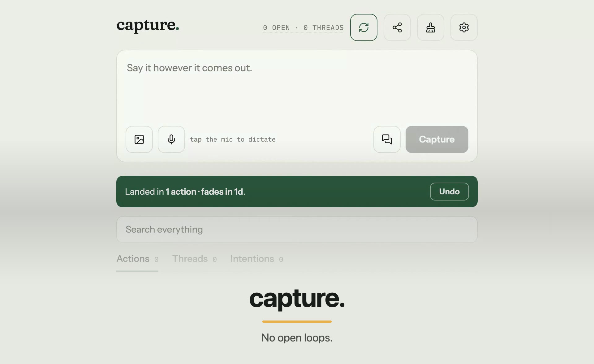
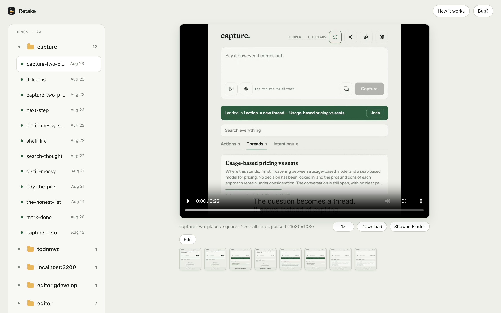
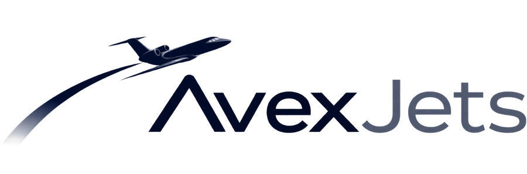
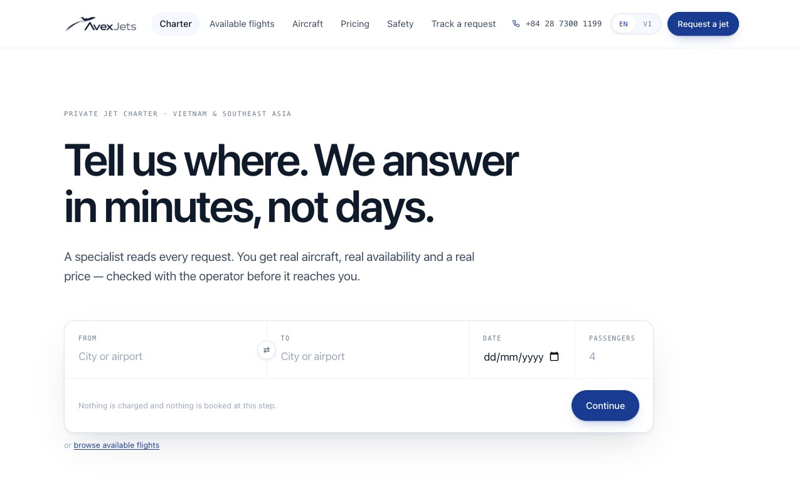
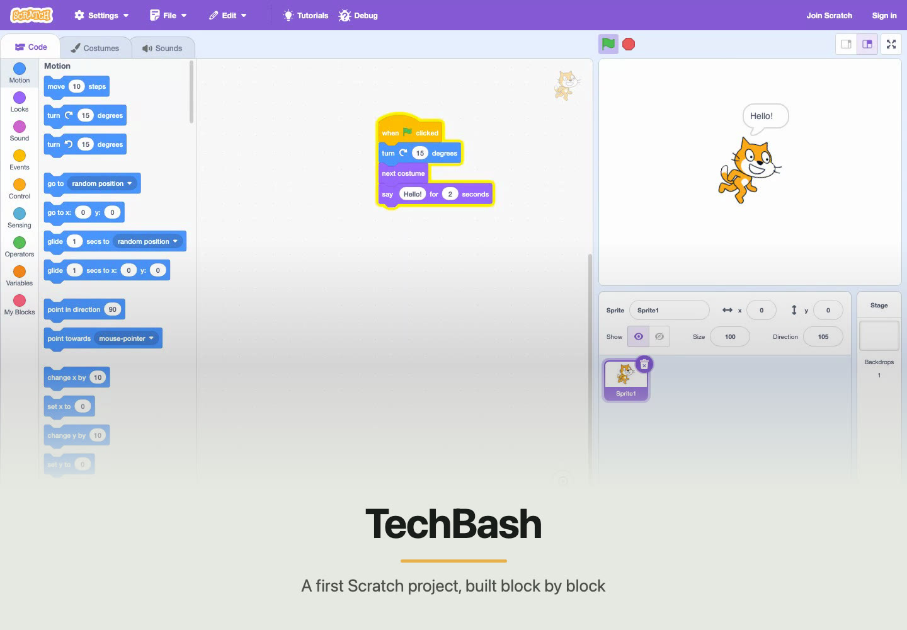

capture.
Five launch videos were drafted, corrected, and recut in one afternoon.

Capture workflow
One rough sentence becomes an action and a continuing thread. Watch that flow in the 14-second take above.
A reusable demo your coding agent records
Describe the walkthrough once. Your agent records the real app, then reruns the same flow after the UI changes.
Retake opens a private library at localhost:4310. Each demo keeps its MP4, stills, and proof log together in one output folder.

When the product changes, the agent reruns the same flow instead of opening a screen recorder.
Retake was built while recording these workflows, not as a landing-page concept.
Five launch videos were drafted, corrected, and recut in one afternoon.

One rough sentence becomes an action and a continuing thread. Watch that flow in the 14-second take above.

One repeatable flow replaced a twenty-minute live walkthrough across three client portals.

The repeatable flow covers three client portals. The image shows the public charter request page, not the private client recording.
The same file can repeat a real Scratch lesson when the lesson changes.

Record a real Scratch lesson. When the lesson changes, use the same file to repeat the walkthrough.
I built Retake for my own launches and client walkthroughs, and I use it most days. The three products above are the proof so far.
Paste this inside your app project. The agent installs Retake and opens its local first-run flow.
Set up Retake from https://github.com/glebbogachev00/retake in this project and open its local UI. Let the first-run questions collect the app URL, workflow, and sound preference; use those answers instead of asking me twice. Dry-run the workflow, record a silent preview, and show it in the Retake UI. Wait for my review, then apply my corrections and rerun it. Add voiceover only after I approve both the recording and narration script. Tell me where the finished MP4 is. Do not deploy, commit, or ask me to paste secrets into chat.
Or install it yourself:
npm install -g retake-demos mkdir demos && cd demos && retake install